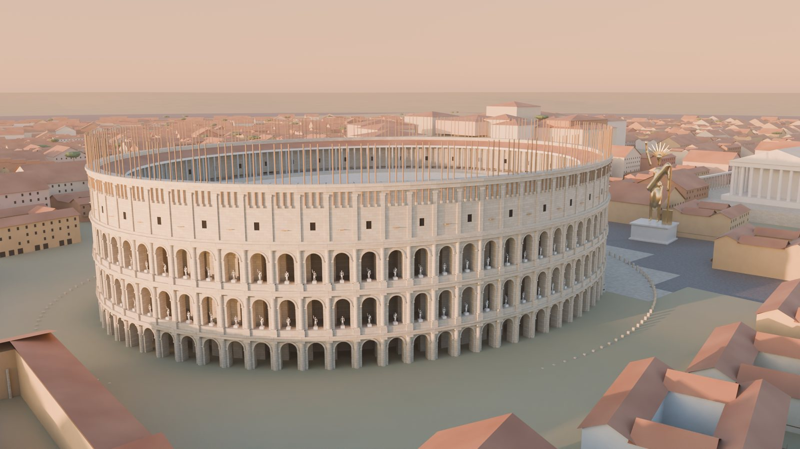
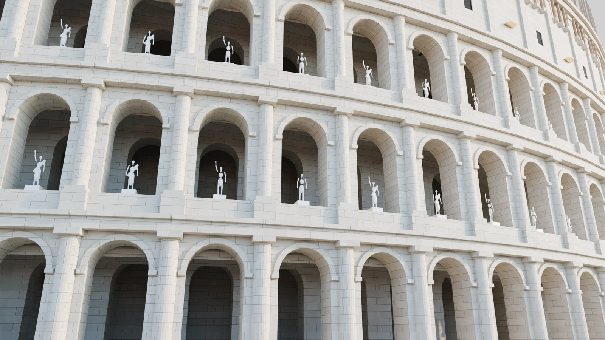
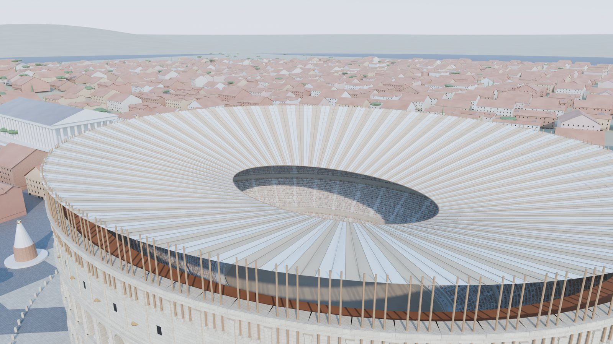
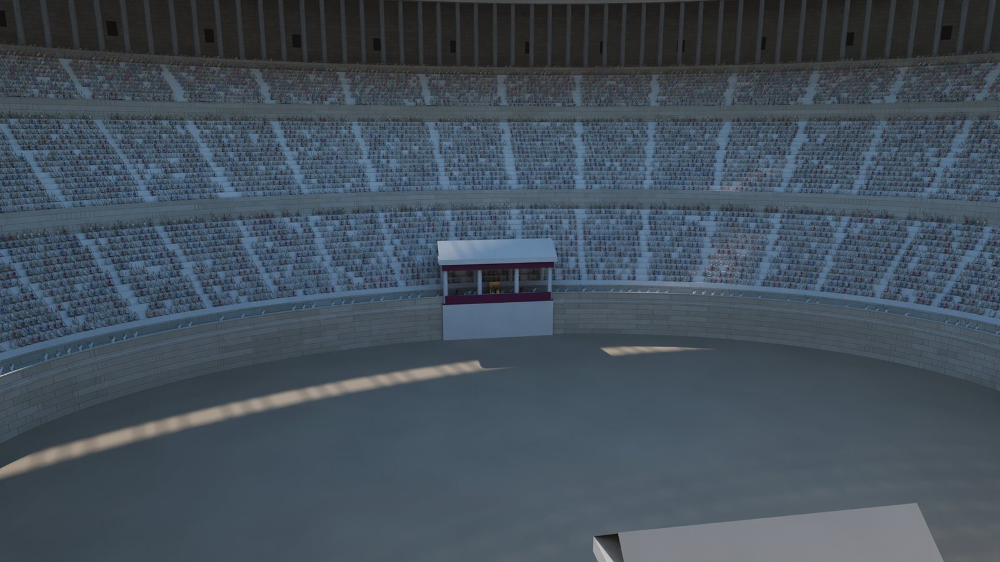
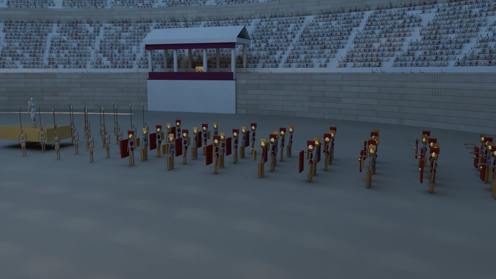
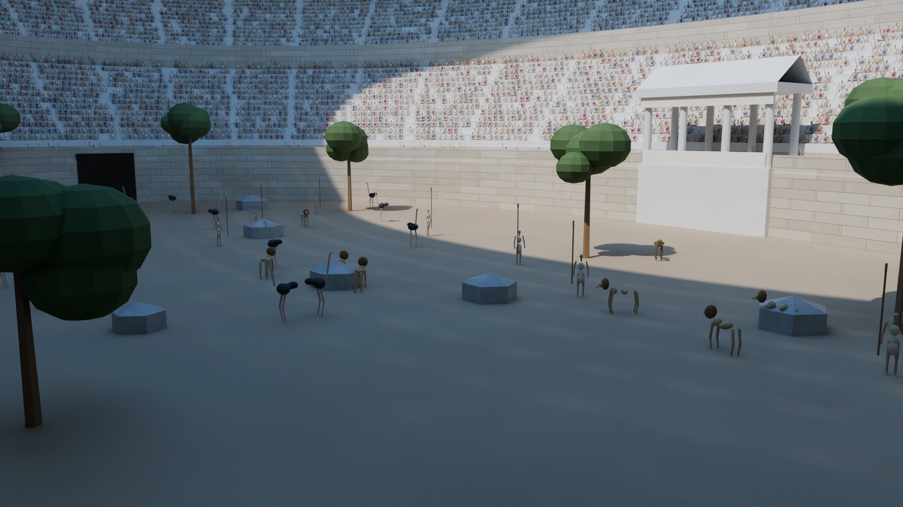
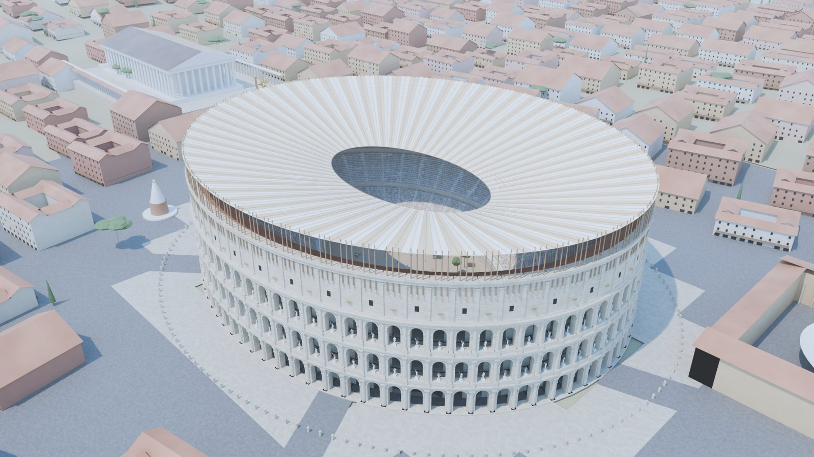
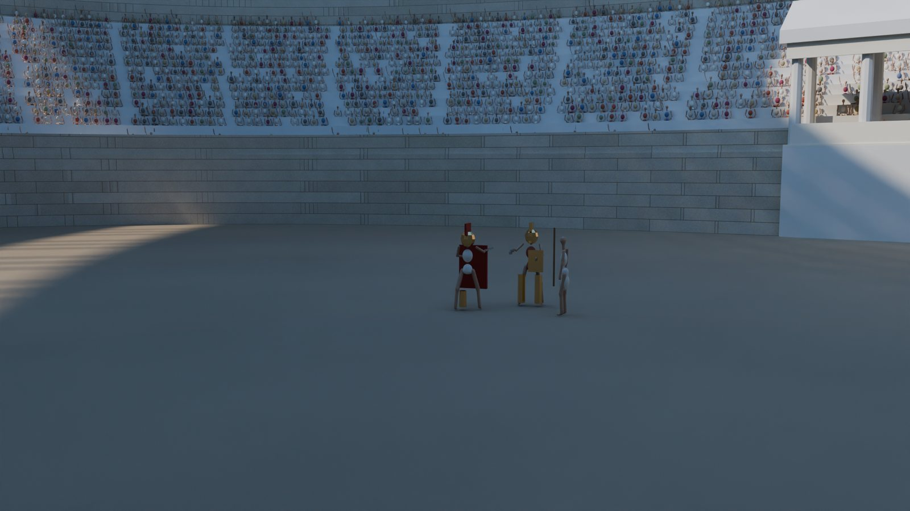
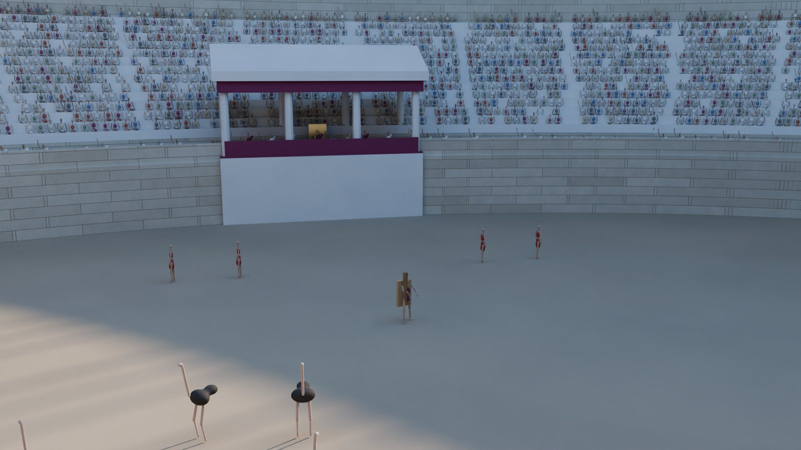
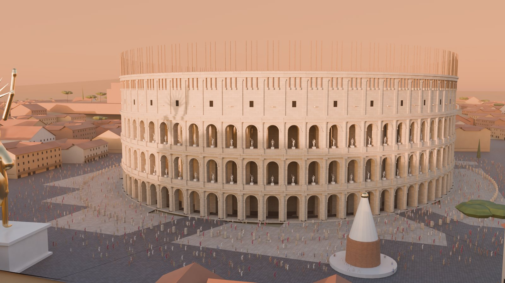

AMANECER
Roma despierta
El anfiteatro, con sus estatuas en los arcos y los mástiles del velario, junto al Coloso de Nerón. Cómodo le había puesto su propio rostro.
Del amanecer a la salida del público: el Anfiteatro Flavio completo y nuevo, con el velario desplegado, cincuenta mil espectadores y el emperador en la arena.

El anfiteatro, con sus estatuas en los arcos y los mástiles del velario, junto al Coloso de Nerón. Cómodo le había puesto su propio rostro.

Cada arco de la planta baja es una entrada numerada. Encima, medias columnas toscanas, jónicas y corintias, y estatuas de mármol en los arcos.

Marineros de la flota de Miseno tensan el toldo gigante sobre 240 mástiles. Solo queda abierto un óvalo sobre la arena.

Senadores con toga blanca en el podio, la plebe más arriba y las mujeres en lo más alto. Al centro, el pulvinar con el trono dorado del emperador.

Músicos, bestiarios con lanzas y gladiadores con capas de púrpura entran por la Porta Triumphalis detrás de la imagen de los dioses.

La arena se convierte en bosque. Los bestiarios enfrentan leones, osos y avestruces traídos de todo el imperio.

El sol cae a plomo sobre la ciudad. Alrededor, la Meta Sudans, el templo de Venus y Roma y las ínsulas de ladrillo y teja.

Un murmillo, con escudo grande y casco de cresta, contra un tracio, con escudo pequeño y espada curva. El árbitro vigila con su vara.

Según Dión Casio, Cómodo bajaba a la arena con piel de león y maza y abatía avestruces ante el público.

El público vuelve a la ciudad. Cómodo moriría asesinado meses después, el 31 de diciembre de 192.
Toda la escena se genera con código y se renderiza con Blender Cycles, un motor de trazado de rayos: el Coliseo con sus 80 arcos por piso, la ciudad con unas 2,600 ínsulas, 22,000 espectadores y la luz del sol en cada hora del día.
Las medidas y la forma del anfiteatro, el velario, los monumentos vecinos y su ubicación, y los hechos del reinado de Cómodo que cuentan las fuentes antiguas.
Las personas y los animales son figuras simples: se leen bien de lejos, pero de cerca parecen maniquíes. La ciudad y las colinas son aproximadas.